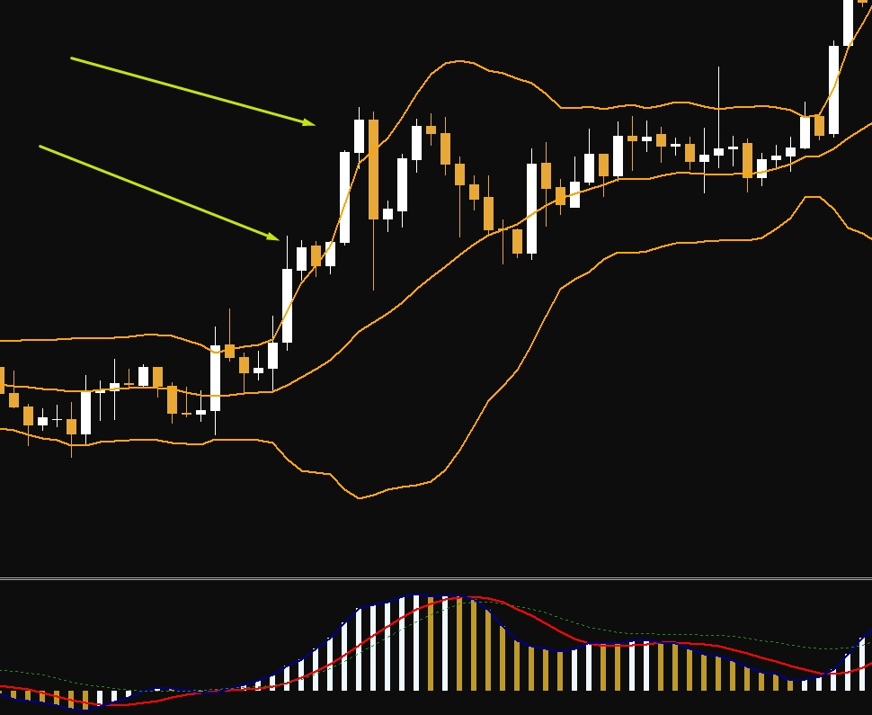
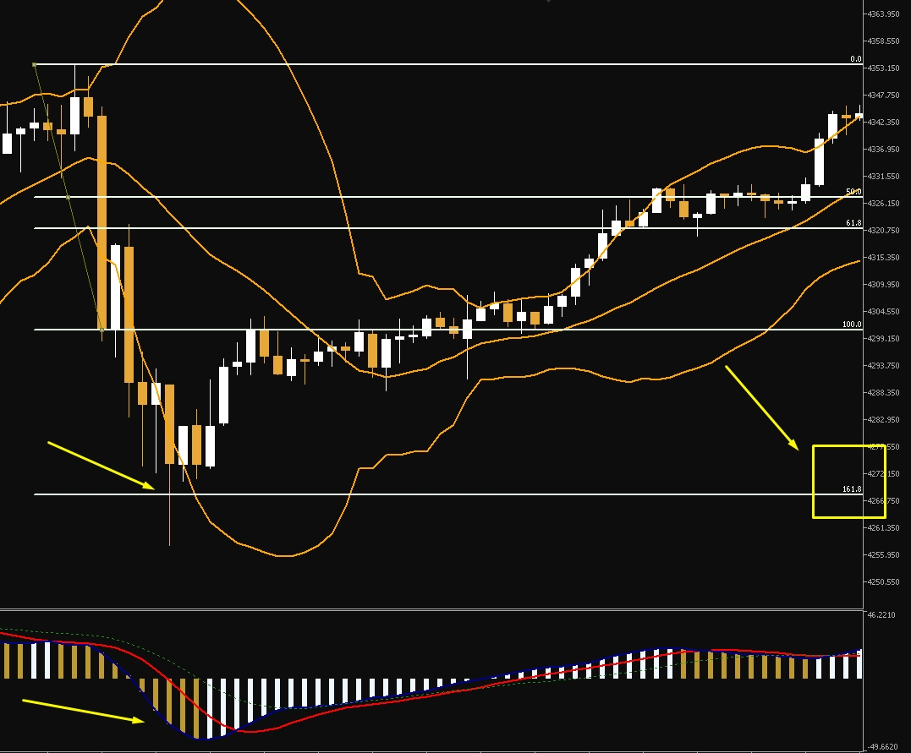
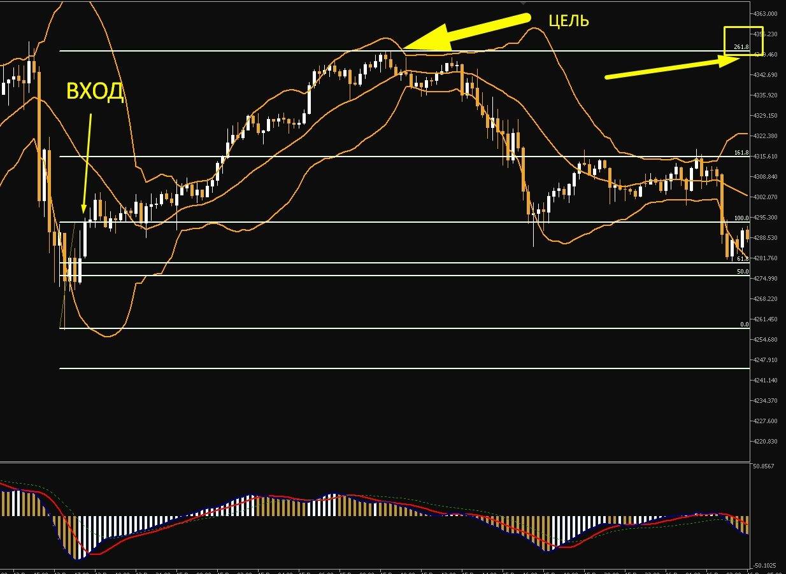

PRIBYTOK / Чек-лист
Системный трейдер
Этот алгоритм превращает хаос графиков в чёткую математическую модель с вероятностью отработки 70–80%.
База: сначала собираем систему, потом требуем деньги с рынка.
1
Контекст: метод «Матрешка»
Старший таймфрейм — направление «танка»
На H4/D1 смотрим, где находится цена относительно Bollinger Bands: вылет за границы или закрепление за средней линией.
Приоритет — только тренд
Контртренд разрешён только при сильной дивергенции и подтверждённом вылете на старшем таймфрейме.
Скрин 1 / Контекст и импульс

Сетка Фибоначчи
Натягиваем сетку на импульс старшего таймфрейма. Работаем только от расчётной структуры, а не по ощущению.
Правило «0 на хвост, 100 на тело»
Уровень 0 ставим на тень свечи, уровень 100 — на тело пробивной свечи. Так зона получается рабочей, а не «нарисованной для красоты».
Ожидание коррекции
Ждём, когда цена придёт в расчётные уровни 161.8, 261.8 или 423.6. Никакой спешки до прихода в зону.
3
Сигнал: спусковой крючок
Младший таймфрейм — только в зоне
На M15 / M5 / M1 внутри ЗИ ждём СКУ или паттерн поглощения. Без зоны младший таймфрейм нас не интересует.
Подвал должен созреть
AO должен сменить цвет, а розовая MA — пересечь синюю линию MACD. Это фильтр, который отделяет рабочую картинку от шума.
Усилитель — дивергенция
Если на M1 / M5 есть дивергенция, значит у движения заканчивается топливо. Это повышает качество точки входа.
Скрин 2 / Зона интереса и созревание сигнала

Точка входа
Либо входим всем объёмом от уровня 100, либо дробим позицию «патронами»: часть от 100 и добор на откате в зону 50–61.8.
Железный риск
Не более 1% на сделку. Получили стоп — закрыли и забыли, не мстим рынку и не пытаемся отыграться.
Стоп-лосс
Ставим за уровень 0 или за -0.38 по Фибоначчи. Стоп должен быть системным, а не «куда не жалко».
Скрин 4 / Вход и цели

Цели по Фибо
161.8 — сейф и частичная фиксация, 261.8 — основная цель, 423.6 — бонус, если рынок действительно даёт движение.
Дисциплина выхода
Дали прибыль — забрали. Не жадничаем и не пытаемся выжать из рынка максимум в каждой сделке.
Финальный шаг
Знать алгоритм — это 10% успеха. Следовать ему каждый день — 90%.
На бумаге всё выглядит логично. Но когда ты остаёшься один на один с терминалом, начинаются эмоции, ранние входы и нарушение рисков.
Я записал короткое видео, где показываю, как мы внедряем эту систему на практике. Ты увидишь изнутри, как выглядит процесс превращения в «биоробота», как мы разбираем ошибки и почему дисциплина работает лучше удачи.
Смотреть видео: система «Разборок с трейдингом»